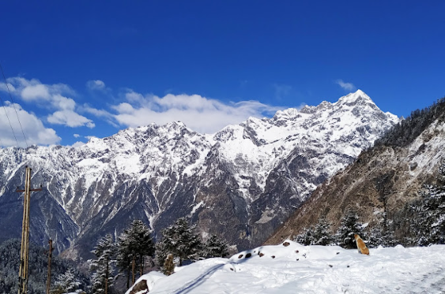
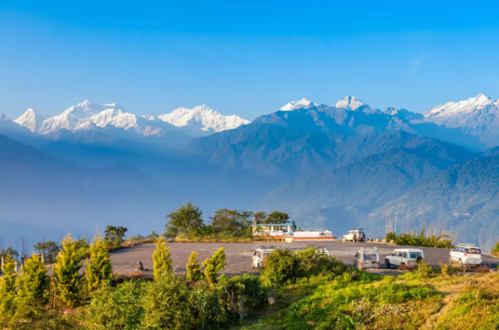
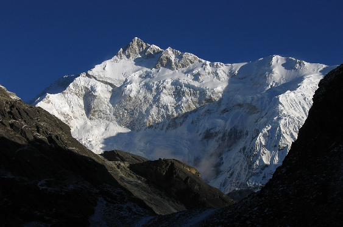

Mount Katao

Located in the northern part of Sikkim, almost 144 kilometers from the capital, Gangtok, and 28 kms from Lachung, Mt. Katao is amongst the most spectacular sights you can imagine in the state. However, one has to avail permits from the army to enter the area where this majestic peak is located. This surreal mountain offers the onlookers a splendid view. This destination is also a perfect place for adventure lovers as sports like skiing, snowboarding, snow tubing and stone grinding can be enjoyed here during the winter season.From Mount Katao, you can see picturesque sight of the snow-clad peaks and mid way to this place you will also come across a stunning waterfall. The valley is also covered with attractive flora such as poppy, primula and rhododendron.
Pelling

Pelling is a serene hill town in the West Sikkim district of India, offering breathtaking views of the Himalayan mountain range, including the iconic Kanchenjunga peak. Known for its tranquil ambiance and picturesque landscapes, Pelling is a popular destination for nature lovers and adventure enthusiasts. The town is home to several monasteries, including Pemayangtse Monastery, showcasing Tibetan Buddhist architecture and artifacts.
Tourists can enjoy panoramic vistas from the famous Pelling Skywalk, which provides an elevated view of the surrounding mountains and valleys. Pelling serves as a gateway to various trekking trails and is a perfect base for exploring the natural beauty and cultural richness of Sikkim.
Gangtok

Gangtok, the capital city of the Indian state of Sikkim, is nestled in the eastern Himalayan range at an elevation of about 1,650 meters. Renowned for its breathtaking scenery, Gangtok offers panoramic views of the Kanchenjunga mountain. The city is a harmonious blend of traditional Sikkimese culture and modernity, with vibrant markets, monasteries, and contemporary cafes.
Encompassing attractions like the Enchey Monastery and Rumtek Monastery, Gangtok holds cultural and religious significance. The Nathula Pass, a high-altitude mountain pass, provides an adventurous route to the India-China border and is a popular excursion from Gangtok.